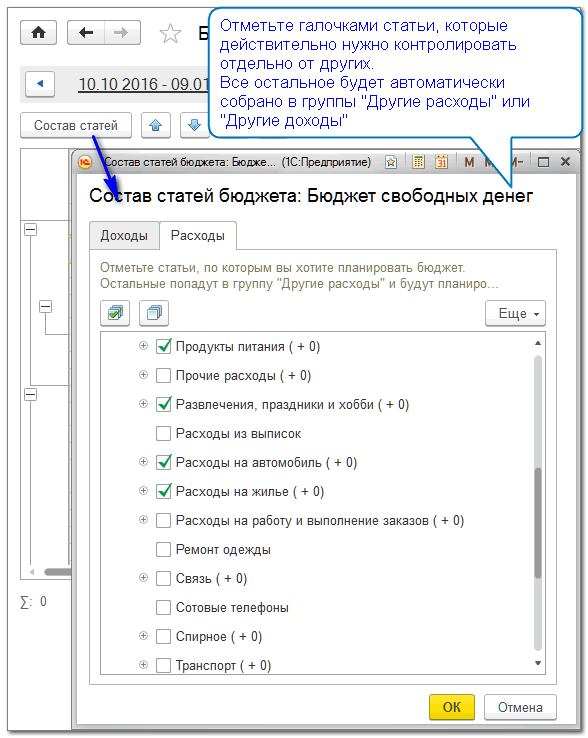
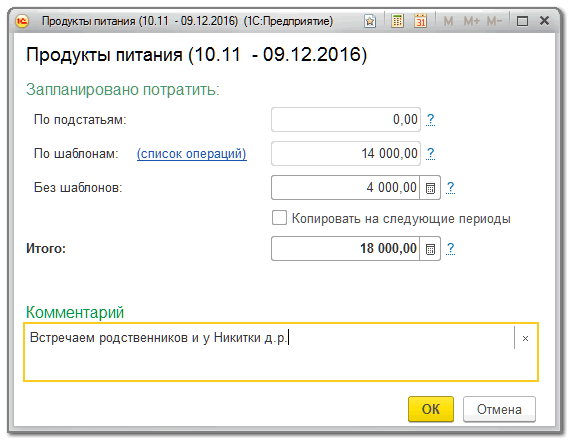

Опишите в таблице бюджета все ожидаемые поступления и распределите деньги по своим финансовым целям, обязательствам и текущим расходам.
В течение бюджетного периода старайтесь соблюдать этот план, чтобы гарантировать себе достижение целей в полном объеме.
Анализируйте возникающие отклонения и, по возможности, компенсируйте их за счет других статей или будущих периодов.
С помощью кнопки Состав статей можно уточнить, какие статьи следует контролировать в бюджете отедльными строками.

Обратите внимание: вновь созданные долги, кредитные карты и статьи доходов/расходов верхнего уровня добавляются в состав бюджета автоматически, начиная с того периода, в котором они были созданы. Долги, кредитные карты и статьи, с которых сняли пометку актуальности, удаляются из состава бюджета начиная со следующего бюджетного периода.
Выберите удобный для планирования период и заполните доходную и расходную части бюджета.
Плановые операции из календаря являются неотъемлемой частью бюджета и изменения планов в календаре отражаются в бюджете автоматически. Но итоговую сумму по статьям, в которых используются плановые операции, в любой момент можно изменить.
В доходной части бюджета следует указывать все ожидаемые поступления денег: сколько планируется заработать, сколько вам обещали вернуть долгов и т.д.
В расходной части бюджета следует указывать все планируемые траты: сколько планируется перевести в накопления, вернуть долгов, потратить по статьям расходов и т.п.
При использовании кредитных карт в доходной части бюджета следует указать сумму, которую планируется использовать из кредитного лимита, а в расходной части - в каком бюджетном периоде сколько планируется потратить на пополнение кредитной карты (восстановление ее лимтиа).
Плановые показатели по статьям можно изменять непосредственно в таблице бюджета, никакие другие показатели в таблице не редактируются. Если по статье бюджета есть плановые операции или заполнен комментарий, в ячейке с суммой отображается значок . Этот значок станет красным, если сумма по статье установлена меньше сумм ее плановых операций.
Рассмотреть плановую сумму в деталях и изменить комментарий можно в форме планового показателя, который открывается с помощью контекстнкого меню или клавишей F4.

Все фактические движения денег, кроме перемещений, автоматически отображаются в колонке Факт бюджета. На основании остатков от плановых сумм и их превышений строятся прогнозы остатков денег на конец периода. Оптимистичный прогноз показывает сколько останется денег, если все доходы будут получены и все расходы оплачены, а пессимистичный - сколько останется денег, если все расходы будут оплачены только из имеющихся денег, без учета еще неполученных доходов.
По любому показателю бюджета можно получить подробный отчет с помощью контекстного меню или нажатием любой клавиши в нередактируемой ячейке.
Контролируя исполнение бюджета следует избегать превышений в расходной части и не допускать отрицательных остатков в прогнозах.